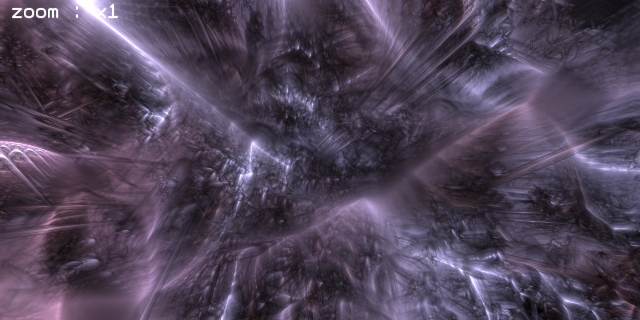
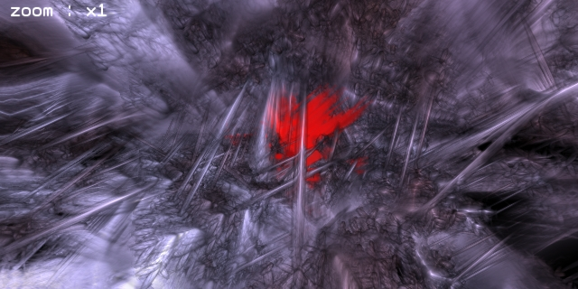
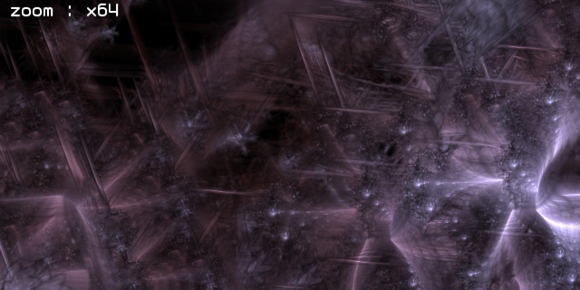
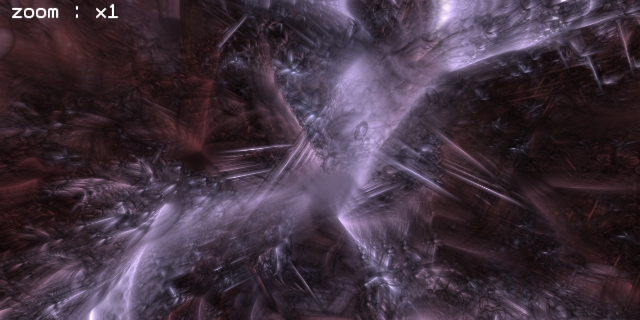
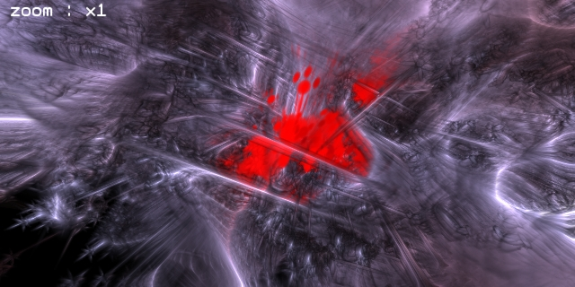

20070809 - Graphics Engine Videos
Until middle of September, my time is near 100% taken by my photography shows, but I did manage to grab an hour to modify the test mule to generate sequences of stills.
With help from
FFmpeg, I can now post video.
The videos below are from the dummy test graphics engine.
They show what the engine can do, WITHOUT any time put into content creation.
070810 Update : Somewhat fixed the video color and quality issues by tweaking the compression parameters and adding 50% more bandwidth.
Had to undo the traditional "throw away the color and darks" video encoding policy. Here are my FFmpeg settings.
ffmpeg -lumi_mask 0.5 -tcplx_mask 0.5 -scplx_mask 0.0 -p_mask 0.0 -dark_mask 0.0 -celim 0 -qns 2 -vstats -qphist -g 24 -mbd rd -r 24 -b 3145728 -flags +4mv+trell+aic+qprd+mv0+cbp+naq -cmp 6 -subcmp 6 -i stills%04d.jpg video.mov
Yep, it is going to take a while to download (about 9MB per video), had to use 3Mbps to capture the motion, will need Quicktime to view movies on the page,
also provided MPEG4's see links.
And please don't Slashdot this!
First Just Motion
Slow motion, shows off the painters fractal compositing engine. Still using an 8bit framebuffer for this, moving to 16bit for HDR soon.
Also there are a few clipping issues to fix which might be noticeable in this example.
This entire test world is defined by a simple nested 18 cell rule, so it tends to look the same at any scale.
However, when finished, Atom will have over 100,000 nested cell rules defining the world, with unimaginable detail and structure at any scale.

Image is Link to Movie (Plays in VLC)
Healing
Shows motion and the self healing of the world. Sorry, don't have the physics engine on, so the effect is a little static right now (not effecting surrounding objects, etc).
Areas that explode go red, then reform. After I finish my optimizations, all objects will be linked into CFD/physics engine, then this will truly be interactive.

Image is Link to Movie (Plays in VLC)
Telephoto
Looking a the world from far away, then using a telephoto zoom. Shows the motion blur well, and how any amount of dynamic motion is no problem.

Image is Link to Movie (Plays in VLC)
Pushed Around
This shows a little of the micro gravity effects in Atom. You are looking out at the rest of the world from a micro world switch is spinning relative to the rest of the world.
Then the player gets bumped, tossed, and spit out by another spinning sub-world. There is no limit to the number of nested worlds in Atom.
You could be inside an area which is spinning inside another area which is spinning inside another area ... pull out the barf bag.

Image is Link to Movie (Plays in VLC)
Complete Chaos
Switched the healing to being very fast, to show some dynamic chaos. Atom does what no other engine does well, insane amounts of fully 3D dynamic motion.

Image is Link to Movie (Plays in VLC)